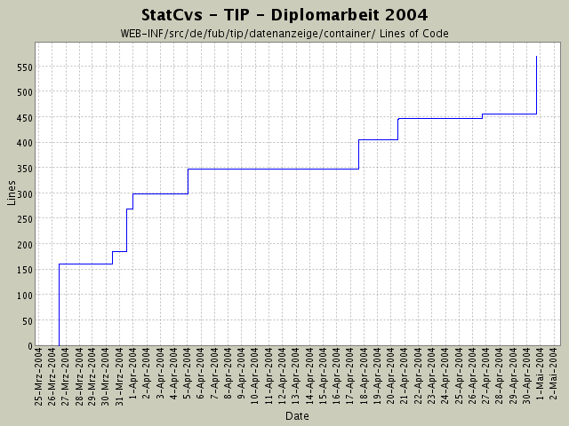

Summary Period: 2004-03-26 to 2004-04-30
[root]/WEB-INF/src/de/fub/tip/datenanzeige/container

Total Lines Of Code:
569 (2004-06-13 13:05)
| Author | Changes | Lines of Code | Lines per Change |
|---|---|---|---|
| hirsch | 20 (100.0%) | 645 (100.0%) | 32.2 |
Fehler in Javadoc beseitigt. CodeBeautify()
127 lines of code changed in:
ActionAusprobiererei
12 lines of code changed in:
JavaDoc-Fehlerchen entfernt
2 lines of code changed in:
Umstieg auf neue Eclipse (3M8)-Version, deutlich besserers Arbeiten,
auch wenn GUI sehr WindowsXPig aussieht.
NullPointerException taucht immer noch auf - Einfügen
von Logging-Statements
4 lines of code changed in:
SightGruppeVO + Container + Anzeige implementiert.
Darstellung angepasst (JSP-Seiten, andere ResourceBundle Inhalte)
67 lines of code changed in:
Anlegen diverser neuer Rümpfe zur Implementierung
neuer Aktionen jeweils mit:
* Action
* LogicObjekt
* LogicFactory und wenn fehlend:
* VO und
* VOContainer.
59 lines of code changed in:
komplettes Dokumentieren der einzelnen Packages nach dem heute
rausgefundenen Schema von SUN -
juchhe!
Viel Tipparbeit - aber jetzt sieht das Javadoc-Resultat
wenigstens wie eine Anwendung aus.
Die neue statcvs-Version ist auch sehr gut!
48 lines of code changed in:
Logik implementieren und die erste Fabrik ist da!
31 lines of code changed in:
neue LogikArchtitektur:
in Zukunft wird nur noch mittels einer Factory ein jeweiliges
LogikObjekt erzeugt,
Schreiben der "Interfaces" für die einzelnen Logikklassen und
anpassen der entsprechenden import-Klauseln und Javadoc-
Dokumentationen
86 lines of code changed in:
Koordinate: Umwandlung nach Postgis hinzugefügt,
Logik für Eventhistorienanzeige angefangen,
Container vervollständigt
49 lines of code changed in:
Veränderungen an der PACKAGE-Struktur,
Hinzufügen neuer VO-Klassen nach gestriger Kotanalyse von
Katjas Quelldateien.
Nur leere Klassenrümpfe da bisher ...
160 lines of code changed in:
Generated by StatCvs v0.2-dev